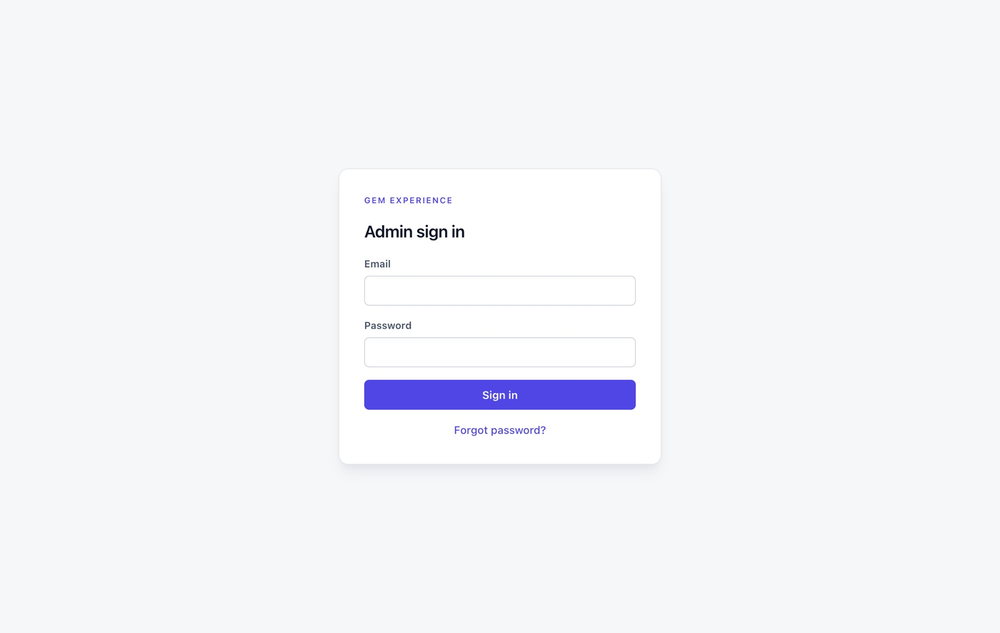
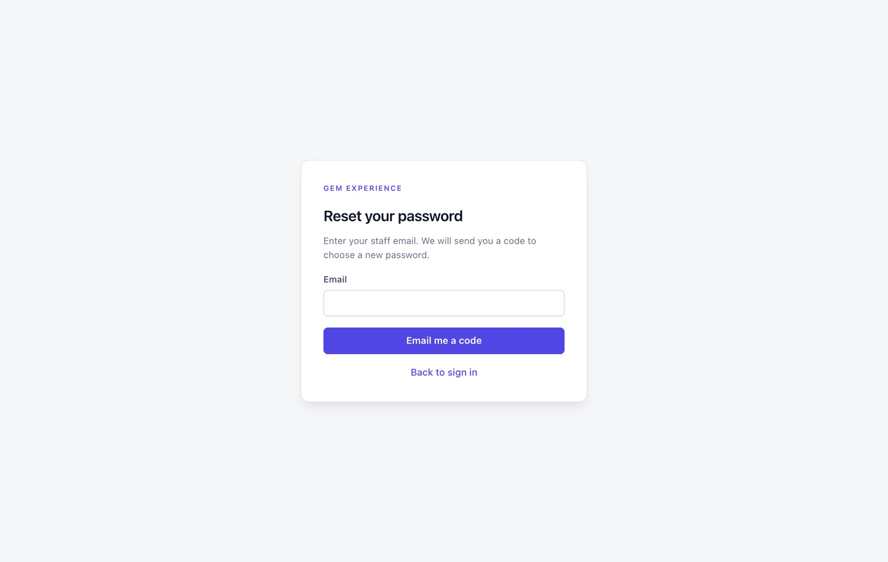
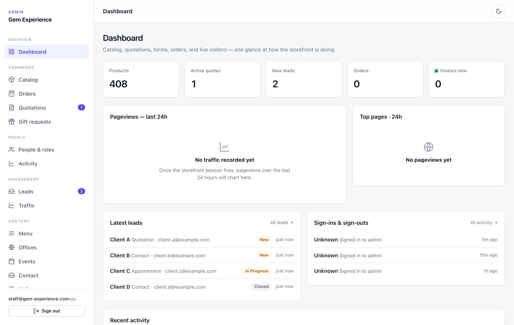
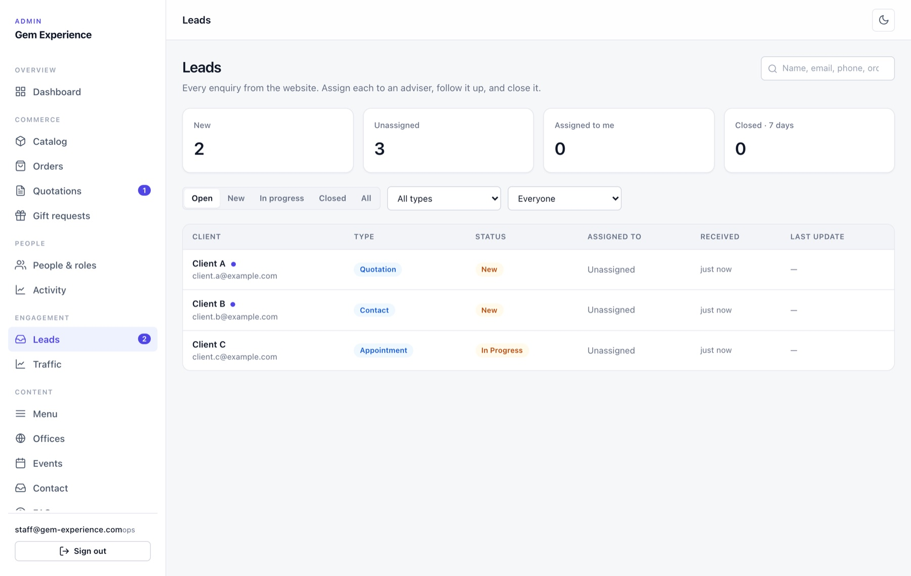
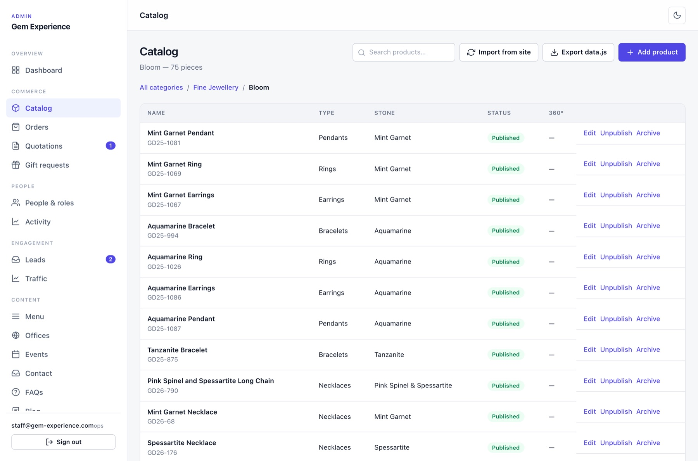
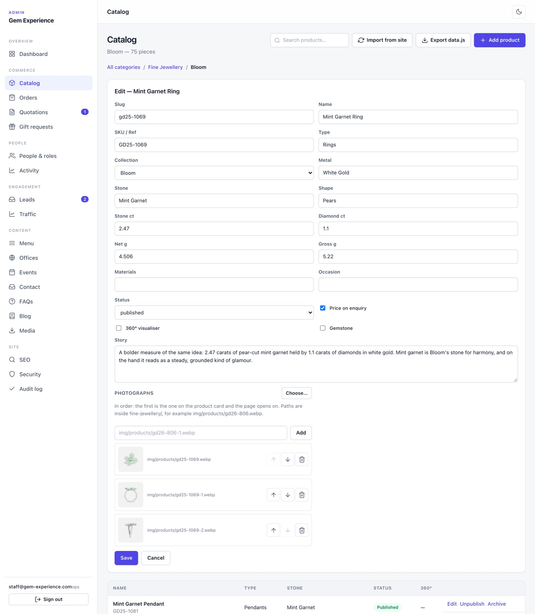
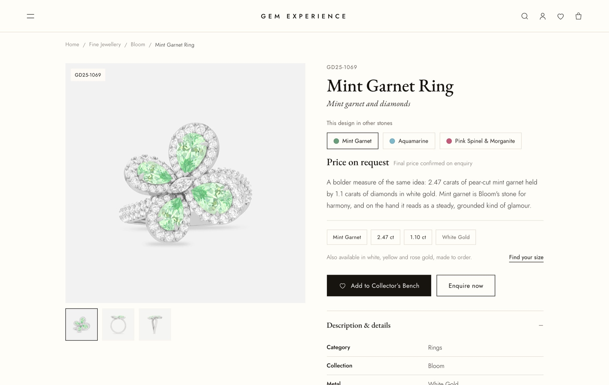
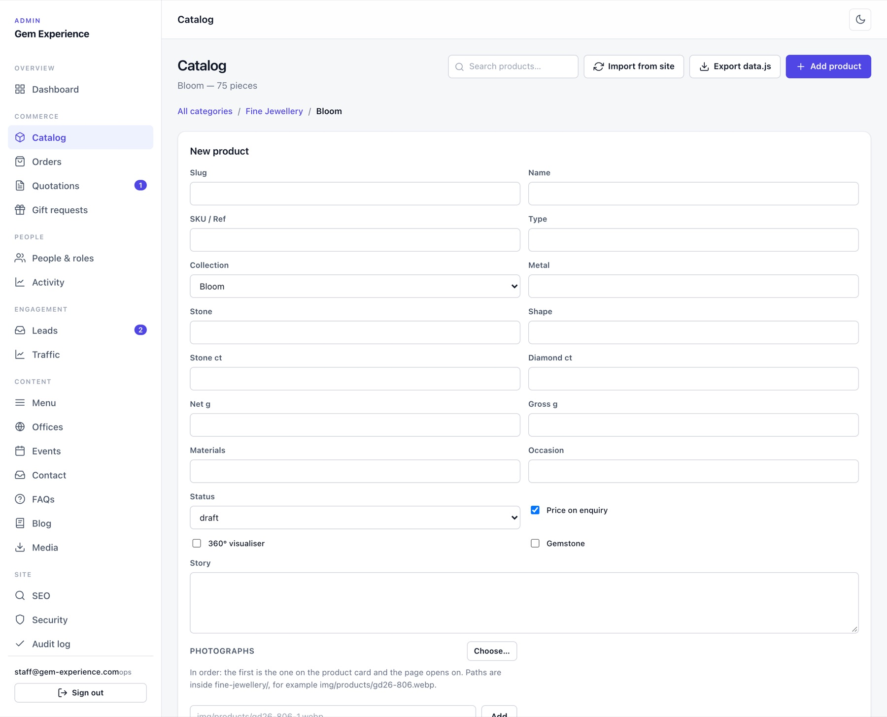
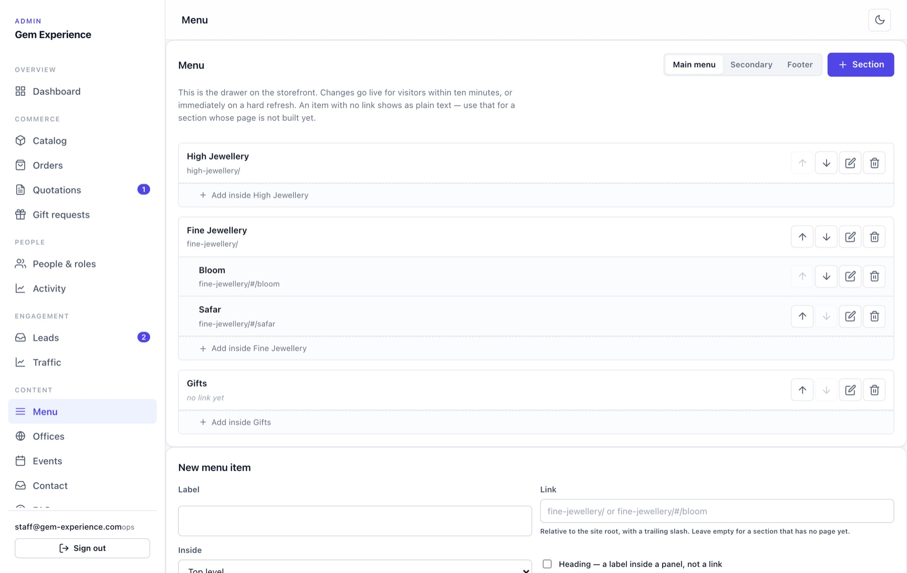
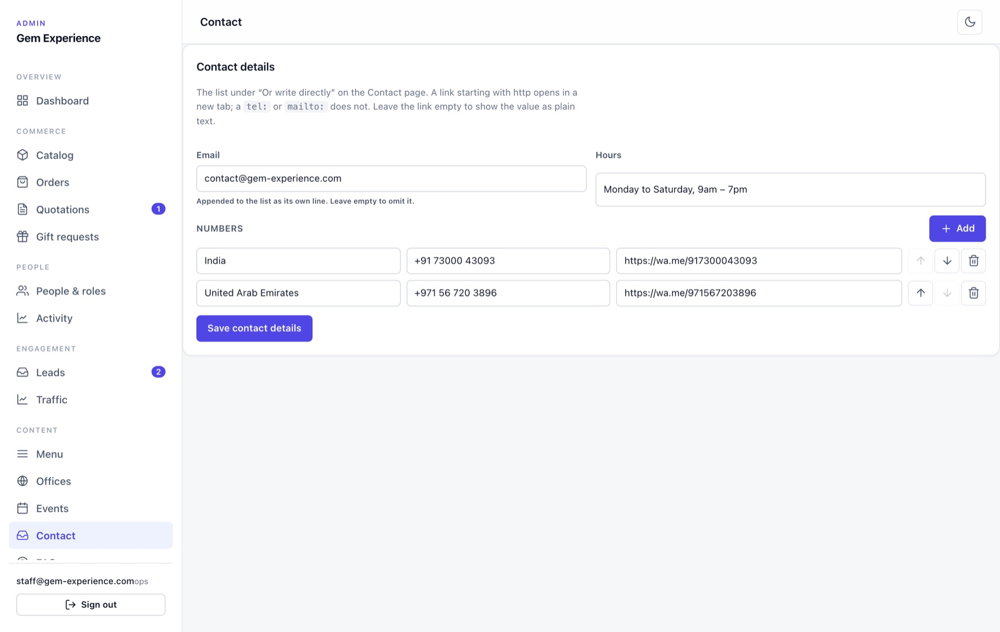

Signing in, managing products, and keeping the website correct
1. Purpose2
2. Accessing the admin panel2
3. Finding your way around3
4. Changing an existing product6
5. Uploading new products10
6. Menu, contact details and FAQs13
7. Photo and writing standards14
8. Do it yourself, or ask the developer15
9. What not to do15
10. Troubleshooting and support17
Version 1.1 · 23 November 2026For Gem Experience staff · Internal
1. Purpose
This SOP shows the Gem Experience team how to sign in to the website's admin panel, update and add products, and manage day-to-day content safely, and marks clearly which jobs must go to the developer.
It is written for the house's own staff: marketing, catalogue and operations. No technical knowledge is needed. Follow each step in order. If a screen looks different from what is described here, stop and contact the developer before going further.
2. Accessing the admin panel
The admin panel lives at https://gem-experience.com/admin/ and opens only for staff accounts. Each person has their own account; never share one.
Before your first sign-in
Ask the developer (or your Super admin) to create your staff account. Give them the work email you will use.
They will tell you your role:
Super admin: everything, including adding staff and changing roles.
Manager: day-to-day running, including products, orders, leads and content.
Admin: catalogue and content editing.
Choose your own password with Forgot password? (below) the first time you sign in.
Use a laptop or desktop with an up-to-date Chrome, Safari or Edge. The panel works on a phone, but product editing is much easier on a large screen.
To sign in
Open https://gem-experience.com/admin/.
Enter your Email and Password, then click Sign in.
You land on the Dashboard. Your email and role show at the bottom of the left-hand menu.
If you see "This account is not staff", click Sign out and ask the developer to set your role.
Click Sign out at the bottom of the left-hand menu when you finish on a shared computer.

Figure 1. The admin sign-in page.
Forgotten password
On the sign-in page, click Forgot password?
Enter your staff email and click Email me a code.
Open the email from Gem Experience and copy the code. It works for one hour.
Back in the admin, enter the code and your new password twice, then click Save new password. You are signed in straight away.
No email after five minutes? Check spam, then click Send a new code.

Figure 2. Reset your password.
Every sign-in, sign-out, screen opened and change made is recorded under your name (see Activity and Audit log), so a mistake can be traced and, usually, put right. Never use a colleague's account.
3. Finding your way around
The left-hand menu groups every screen into six sections. The last column below matters most: content edits go live within about 10 minutes, but product edits go live when the developer publishes them.

Figure 3. The Dashboard. The left-hand menu is on every screen. Blue number badges count enquiries still waiting. (Sample data.)
Section
Screen
What you do there
Reaches the website
Overview
Dashboard
New enquiries, orders and traffic at a glance
Nothing to publish
Commerce
Catalog
Edit and add Fine and High Jewellery products
After the developer publishes
Commerce
Orders
Follow an order and update its status
Visible to the client in their account
Commerce
Quotations
Price requests from the quotation form and checkout
Nothing to publish
Commerce
Gift requests
Gift orders that need a card written
Nothing to publish
People
People & roles
Staff and client accounts; roles (Super admin only)
Immediately
People
Activity
Who signed in and what they changed
Read only
Engagement
Leads
Every form sent from the site: contact, appointments, newsletter
Nothing to publish
Engagement
Traffic
Visitors and the pages they read
Read only
Content
Menu
The site's top menu and footer links
Within ~10 minutes
Content
Offices
The office cards on Our ateliers
Within ~10 minutes
Content
Events
Events & Exhibitions dates
Within ~10 minutes
Content
Contact
Phone numbers, emails, WhatsApp, addresses
Within ~10 minutes
Content
FAQs
Questions and answers by category
Within ~10 minutes
Content
Blog
Journal articles
When marked published
Content
Media
The photo and video library used by the screens above
When used on a page
Site
SEO
Page titles and descriptions for Google; saved here, applied by the developer
After the developer publishes
Site
Security
Sign-in and account safety checks
Read only
Site
Audit log
A permanent record of every change
Read only
Handling an enquiry (Leads, Quotations, Gift requests)
Click the item to open it and read the client's details and message.
Change its status to In progress when you reply, so colleagues know it is taken.
Change it to Closed when it is finished. Never leave answered enquiries as New.

Figure 4. Leads. Filter by Open, New, In progress or Closed; the coloured status shows where each enquiry stands. (Sample data.)
4. Changing an existing product
Product changes are a two-stage job: you prepare them in the admin, then the developer publishes them to the website.
The live site reads its products from published catalogue files, not straight from the admin, so a saved edit appears on gem-experience.com after the second stage.
Before you start: ask the developer whether the admin's catalogue is up to date with the website. They keep the two in step with Import from site; you never need to press it yourself.
To edit a product
Click Catalog in the left-hand menu.
Click the category: Fine Jewellery or High Jewellery.
Click the collection the piece belongs to (pieces with no collection are under Not in a collection).
Find the piece. Use Search products… with its name or SKU (for example GD25-1069).
Click Edit on its row. The edit form opens at the top of the page.

Figure 5. The pieces in a collection. Each row has Edit, Unpublish and Archive. Import from site and Export data.js (top) are for the developer.
Change only the fields you need:
Name: as shown on the product card and page.
SKU / Ref: the house reference; must match the stock register.
Collection: choose from the list; never type a new name.
Metal: for example "White Gold" or "18k Rose Gold".
Stone, Shape: for example "Mint Garnet", "Pears".
Stone ct, Diamond ct, Net g, Gross g: numbers only, no units (2.47, not "2.47 ct").
Story: the paragraph on the product page.
Leave Slug exactly as it is. It is the piece's web address; changing it breaks every link to the piece.
Photographs shows the piece's pictures in order. The first is the one on the product card. Use the arrows to reorder and the bin to remove one.
Click Save. A "Product saved." message confirms it.
Email the developer the SKUs you changed and ask for them to be published (see "Requesting a publish").

Figure 6. The edit form for one piece, with its photographs at the bottom.
How the fields appear on the website

Figure 7. The same piece live on gem-experience.com: Name (title), SKU / Ref (top), Story (paragraph), Stone, Stone ct, Diamond ct and Metal (the boxes). The photographs are on the left, in the order set in the admin.
To take a piece off the website
Unpublish: takes the piece off the website for now, for example while it is out on loan or being re-photographed. Publish on the same row brings it back.
Archive: for sold or discontinued pieces. It leaves the website and stays in the admin as a record.
There is no Delete, on purpose. Nothing you do here can erase a product.
Both take effect at the next publish. If a piece must come down urgently (a wrong photo, wrong details, a sold one-off), call or WhatsApp the developer as well.
Requesting a publish
Send the developer one email per batch of changes, with:
the SKUs and a one-line note of what changed ("GD25-1069: story rewritten, stone ct corrected to 2.47");
whether it is urgent or can wait for the next weekly publish.
The developer exports the catalogue, checks it, and publishes. Check the live page afterwards and reply to confirm.
5. Uploading new products
New pieces reach the website through a product sheet and a photo folder sent to the developer.
Photographs are processed before they go live: a matching background, colour and sparkle grading, and resizing for phones. That keeps every piece looking the same on the site, so new photographs always go to the developer as originals.
A. Prepare the product sheet
Use the house template, Fine Jewellery for website.xlsx, Sheet1 only. One row per piece:
Zip the photo folder, or share it from Google Drive.
Email the developer the sheet and the link, subject New products – <date> – <number of pieces>.
Say which pieces are the same design in different stones, so they can be grouped on one card.
Note any write-ups (story paragraphs) you want in place of the standard one.
D. Check after publishing
The developer replies with the list of new pieces once they are live.
Within two working days, open each piece on gem-experience.com and check name, stones, weights, metal and photos against the sheet.
Reply with corrections by SKU. Text fixes and photo order you can then change yourself (section 4).
Adding a single piece in the admin (optional)
Catalog → category → collection → Add product.
Fill in Slug (the SKU in lower case, for example gd26-806), Name, SKU / Ref, Type, Metal, Stone, the weights and Story.
Leave Status as draft, keep Price on enquiry ticked, and click Save. A draft stays off the website.
Send the developer the SKU and the photo folder (B above). They add the processed photographs and publish it.

Figure 8. Add product: the empty form for a new piece.
6. Menu, contact details and FAQs
These screens change the live website directly, within about ten minutes. No developer is needed, so check your work before saving.
Menu
Click Menu. Choose Main menu, Secondary or Footer at the top.
Use the arrows to reorder, the pencil to rename, Add inside… to add a sub-item.
Links are written from the site root with a trailing slash, for example fine-jewellery/.
Open the website after ten minutes (or press Ctrl+Shift+R / Cmd+Shift+R) and check the menu.

Figure 9. Menu: arrows reorder, the pencil edits, the bin removes. (Sample data.)
Contact, Offices, FAQs, Events, Blog
Contact: phone, WhatsApp and email lines. Keep the order UAE · India · Tanzania.
Offices: one card per atelier, with address, phone and photo.
FAQs: questions grouped by category; untick Published to hide one without deleting it.
Events: an event moves from Upcoming to Past on its own after its date.
Blog: write as a draft, preview, then mark it published.
7. Photo and writing standards
Photographs
Product stills: plain, light background, the piece centred, no props, no watermark or logo.
Model and editorial photos: the piece clearly visible; at least 2000 px wide.
Uploading through Media: JPG or WebP for photos, MP4 for video, each under 20 MB; upload large batches a few at a time.
Name files plainly before uploading (tanzanite-ring-front.jpg, not IMG_4482.jpg). A file cannot be renamed once uploaded.
To replace a photo, upload a new file with a new name and switch the page to it. Visitors' browsers keep old images for up to 30 days.
Only upload photographs the house owns or has written permission to use.
Writing
British spelling: jewellery, colour, centre, grey.
Metal written as "18k White Gold"; weights as "2.35 carats" in prose and as plain numbers in the weight fields.
Stone names capitalised as on the site: Tanzanite, Pink Spinel, Tsavorite, Mint Garnet.
No prices anywhere on the site; every piece is price on enquiry.
Offices and emails listed in this order: UAE · India · Tanzania.
The house voice: short, factual sentences, with no exclamation marks and no "stunning" or "amazing".
Read every change once on the live website after it appears.

Figure 10. Contact: the numbers and emails shown across the site. (Sample data.)
8. Do it yourself, or ask the developer
If a job is not in the left-hand column, treat it as a developer job.
You can do it yourself
Ask the developer
Edit a product's name, story, stones, weights, metal or collection (then request a publish)
Publish product changes to the website
Reorder or remove a product's photographs (then request a publish)
Add new product photographs (they are processed first)
Unpublish or archive a piece (then request a publish)
Upload a batch of new products
Answer and close leads, quotations and gift requests
Create a new collection or category
Update an order's status
Add a new page or section, or change the design
Change the menu, office cards, contact details and WhatsApp numbers
Change the homepage, Collector's Bench, postcards or 3D views
Add, edit or hide FAQs
Change page titles and descriptions for Google (SEO)
Write and publish blog articles
Add a staff member or change a role
Add and update events
Change the emails the website sends, or who receives them
Upload photos and videos to Media
Anything in Supabase, the server, the domain or email settings
Reset your own password (Forgot password?)
Import from site and Export data.js in Catalog
Read Activity, Audit log and Traffic
Anything that shows an error message you do not understand
9. What not to do
Each of these breaks pages or loses work, and most can only be put right by the developer.
Do not click Import from site unless the developer asks you to. It overwrites every product in the admin with the live version, wiping unsent edits, yours and colleagues'.
Do not click Export data.js expecting it to publish. It only downloads two files; nothing changes on the website.
Do not change a product's Slug, or the link of a menu item that already exists. Links shared on WhatsApp, Instagram and Google stop working.
Do not delete menu items, offices, FAQs or events to "tidy up" without checking with the team. They disappear from the live site within minutes.
Do not put prices, client names, stock notes or internal costs in any field. Anything in the admin can end up on the public website.
Do not share your login, or sign in as someone else. Every change is recorded against the account that made it.
Do not edit in two tabs or on two computers at once, or at the same time as a colleague on the same item. The last save silently replaces the other.
Do not upload photos you do not own, or files with symbols in the name (#, %, &).
Do not open Supabase, the server or the domain settings, even if you are given access. Changes there can take the whole site down.
Do not ignore an error message. Take a screenshot, stop, and send it to the developer before trying again.
10. Troubleshooting and support
Most problems are fixed by waiting ten minutes or reloading the page. If not, contact the developer with a screenshot.
What you see
What to do
A content change is not on the website
Wait 10 minutes, then reload the website with Ctrl+Shift+R (Cmd+Shift+R on a Mac)
A product change is not on the website
Expected until the developer publishes; check you requested it
"Invalid login credentials"
Check the email for typos and Caps Lock, then use Forgot password?
No reset code arrives
Check spam; after five minutes click Send a new code
"This account is not staff"
Sign out and ask the developer to give your account a role
A red error message after Save
Nothing was saved. Screenshot it and send it to the developer
An upload stays at "Uploading…"
The file is probably too large; resize it under 20 MB and try again
The admin looks broken or blank
Reload; try another browser; then contact the developer
You made a mistake
Tell the developer the screen, the item and roughly when. Every change is in the Audit log, so it can usually be traced and put back
When you contact the developer, include
What you were trying to do.
The screen and the item (SKU, FAQ, office…).
A screenshot, including any error message.
Whether it is urgent: the live site is wrong now, or it can wait.
Keep this SOP with the team, and ask the developer to update it whenever the admin changes. Screens marked "sample data" show example entries, not real clients.